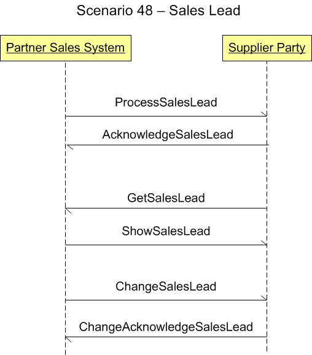

Scenario 48 - Sales Lead48.0 OverviewScenario #48 describes the integration for partner sales systems with a supplier sales system concerning sales leads.The purpose of this scenario is to enable the visualization of the participants in the process and the dialogs between them for this specific integration. This scenario is not meant to be the only model for integrating general ledger applications to a budget applications. This is simply one model that may be used to guide one's own integration efforts. 48.1 Scenario DiagramThe scenario below contains the participants involved in the interaction, the dialog flows or conversation between them, certain assumptions about the sequence of events, and assumptions about the technical approach, for example, publish and subscribe.This is a model to be used as a design recommendation, not a required approach.  48.2 AssumptionsThis scenario assumes a loosely coupled, asynchronous approach with transaction management required but not explicitly defined.It is assumed that the supplier party is the organization that is interested in providing goods or services. The environment for this first part of this integration is typically within an enterprise and within a division. The environment for this second portion of this integration is typically between two enterprises. This scenario also assume that one application will maintain the master data for integration. 48.3 Participant DefinitionsThis scenario contains two participants or roles: a partner sales system which is intended to provide sales leads to a supplier party, and the supplier parties system.48.4 Business Workflow (Sequence)The business workflow is graphically represented by starting at the Scenario top and reading from top down and from left to right.This scenario contains the following events in the workflow sequence:
48.5 Exception HandlingException handling is highly localized as the result of an implementation's infrastructure, management and business rules. As such, this section of the Scenario documentation is planned to be used as a guide to help understand the additional intent of these Scenarios. If no exceptions are noted here, then it can be assumed that the Scenario designers agreed that the Scenario is straight forward and has no additional needs:
Copyright OAGi 2017 - All Rights Reserved -- OAGIS release 10.4 - Document Number: 20170501-48 |